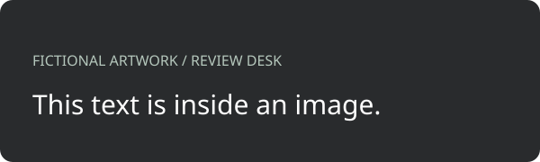

REVIEW DESK / FICTIONAL INTERACTION CHECK
「文字」と「見た目の文字」。
実際のChrome拡張機能で確認する架空のページです。npm run demoで起動し、http://127.0.0.1:8765/demo/selection-check.htmlを開いてください。ページを用意したことは、確認済みを意味しません。
サイト側のクリック 0 回 / ドラッグ 0 回
1. 普通の文字とリンク
これは普通の文字です。短い部分だけ選んで記録します。
「文字」モードでドラッグし、メモができること、サイト側クリック/ドラッグが増えないことを確認します。「見る」に戻した後は、リンク・ボタンが通常どおり動くことを確認します。
2. 選択を禁止している文章
サイトが通常の文字選択を禁止している文章です。
文字モード中に選択でき、Escまたは「見る」で元の選択禁止・カーソルへ戻ることを確認します。
3. 画像・図形・CSSの文字

文字モードで対象に触れると「場所」「囲む」の案内が出ることを確認します。画像内の文字認識は行いません。代替ボタンから切り替えて、対象を記録します。
4. 入力欄
文字モードでは内容を元の文章として取り込まず、記録方法の案内を出します。入力内容が変わらないことを確認してください。「場所」「囲む」での撮影には見えている内容が写ります。
5. 複数行と枠内スクロール
途中に太字の装飾がある文章を、右から左にもドラッグしてください。折り返した行まで含めて記録します。
スクロールした先の文字です。
選択文字のそばに番号が出ること、枠内スクロールに追従することを確認します。文字が枠の外へ隠れたら番号も隠れます。
6. 続けて記録・キャンセル
- 文字を記録し、メモを入力。「続けて文字を指定」で別の文字を記録します。
- ドラッグ途中でEsc。メモを増やさず、通常の閲覧に戻ることを確認します。
- 「囲む」でクリックだけします。小さな空のメモが作られないことを確認します。
- 右クリック・中クリックでは新規メモを作らないことを確認します。
- 画面をスクロールし、保存したメモと番号が対応することを確認します。
リンクの移動先（このページ内）
架空の操作です。フォーム送信や外部通信はありません。